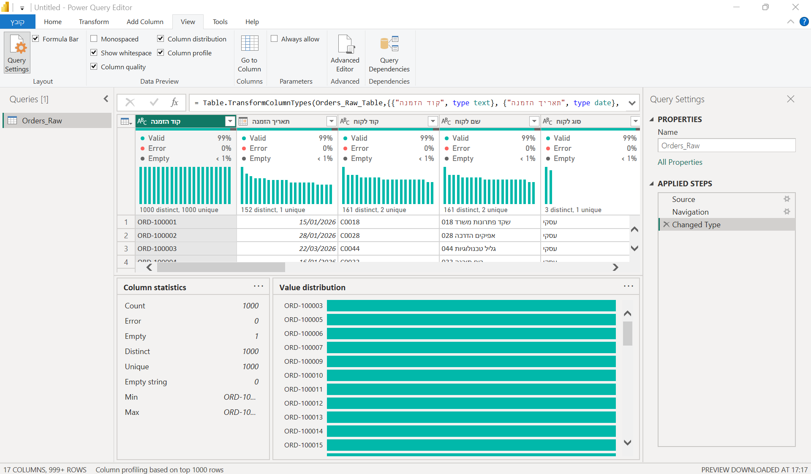
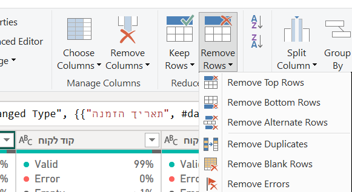
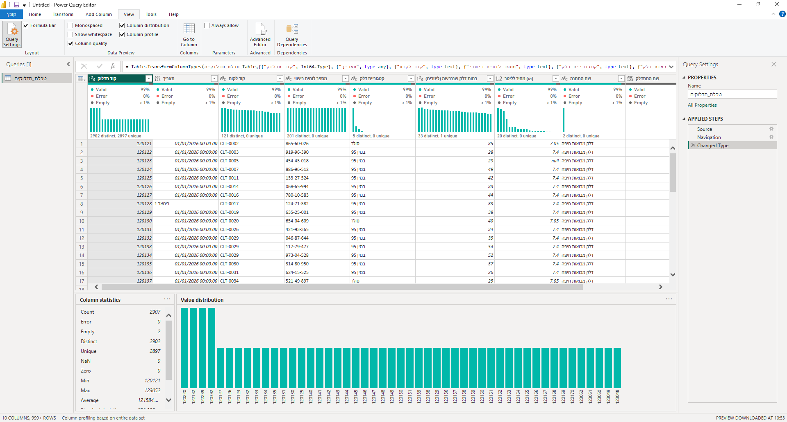
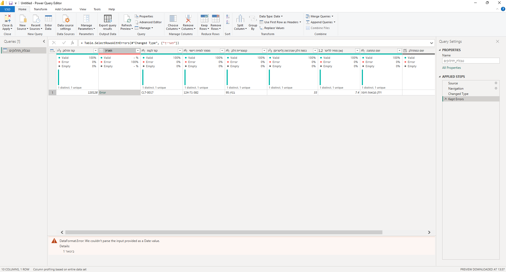
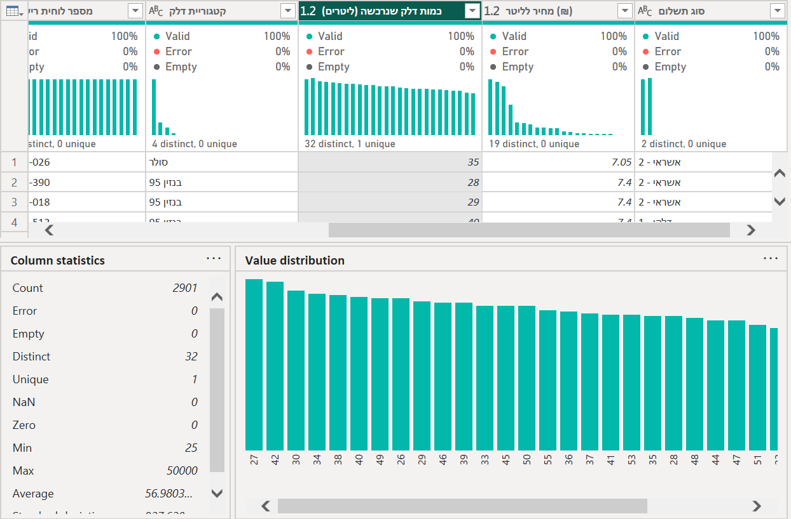
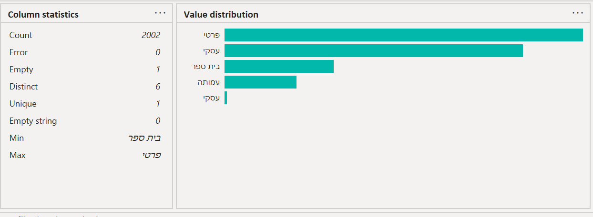
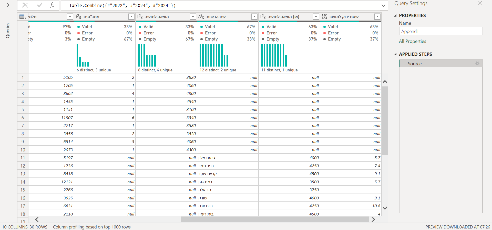
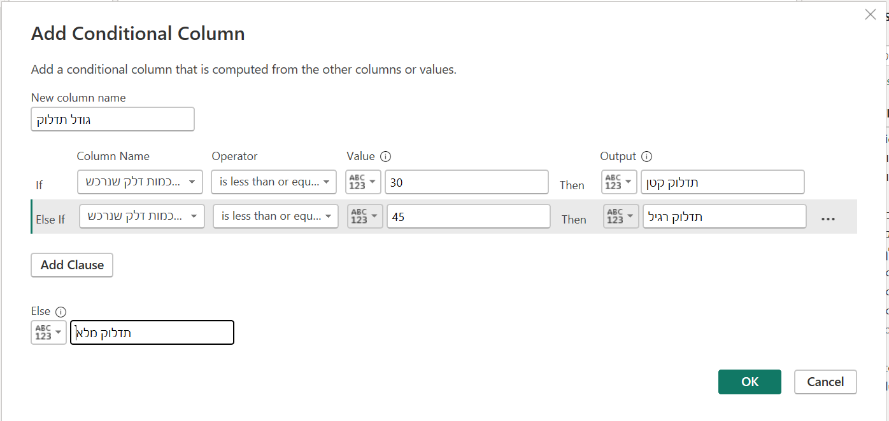

פאוור BI · י״א וי״ב · דף עזר פתוח
דף נוסחאות לשעת עבודה. לכל בעיה בנתונים: איך בודקות, איך מתקנות (בפאוור קוורי או באקסל), ומה כותבות בתיעוד. פותחות כרטיס, מעתיקות את הצעדים, וחוזרות לעבודה. את ההסבר המלא יש בפרק הטיוב, ואת התרגול בשיעורים.
חמישה צעדים, באותו סדר בכל קובץ:
123: האפסים כבר נעלמו.מצאתן משהו מוזר בעמודה? בחרו כרטיס. כל כרטיס סגור עד שפותחות אותו.
=COUNTBLANK(…) על העמודה: כמה תאים ריקים.null, ב־Replace With הערך.להציל רק עם סיבה. ״בינואר כל תדלוק של בנזין 95 עלה 7.40״ היא סיבה. ״נראה לי״ היא לא.
״מחיר לליטר: פאוור קוורי, entire data set, Empty 6 (0.21%). סיננו על null: כולם בנזין 95, כולם בינואר, ובינואר כל 649 התדלוקים האחרים של בנזין 95 עלו 7.40. Replace Values: null ← 7.40. הצלנו ולא מחקנו, כי שאר השורה תקין. אחרי: Empty 0.״
בדקתן ולא מצאתן? כותבות גם את זה: ״Column quality, entire data set: Empty 0 בכל העמודות״.

בשיעור: ארבעה כלים לבחון את הדאטה · מחיר חסר: למחוק או להציל?
=COUNTBLANK(…) שווה למספר השורות, או שברשימת הסינון מופיע ערך אחד בלבד.סדר: קודם Remove Blank Rows, ורק אחר כך מחליפות null במחיר. אחרת השורה הריקה מקבלת מחיר, ואיננה ״ריקה״ יותר.
מחיקה באקסל היא מחיקה. כדאי לשמור עותק של הגיליון לפני.
Remove Blank Rows לא נוגע בשורה שחסר בה רק מחיר. אותה מטפלות בכרטיס ריקים.
״שורות: Remove Blank Rows, שתי שורות ריקות לגמרי (Empty 2 בכל העמודות), מ־2,907 ל־2,905. עמודות: הורדנו את שם המתדלק (Empty 100%) ואת שם התחנה (ערך אחד בכל השורות). שתיהן לא עונות על שום שאלה.״

בשיעור: תיקונים ראשונים: עמודות, ריקות, כפילויות · הטבלה המלאה של התדלוק
קודם המפתח. כפילות נבדקת על המפתח, לא על כל עמודה: ״בנזין 95״ מופיע 2,173 פעמים, וזו לא כפילות. יש עמודת מזהה (קוד תדלוק, מספר הזמנה)? היא המפתח. אין? צירוף של כמה עמודות, כמו תאריך + לוחית רישוי + כמות. למה
=COUNTIF(…). תוצאה גדולה מ־1 היא כפילות.שורות ריקות קודם: ריקות נחשבות ״זהות״ זו לזו.
מסמנות את כל העמודות? נמחקות רק שורות שזהות בכולן, ולפעמים קופצת שגיאה. רק עמודת המפתח.
״המפתח: קוד תדלוק, כי כל תדלוק מקבל קוד פעם אחת. אחרי Remove Blank Rows, בפאוור קוורי עם entire data set: Count 2,905, Distinct 2,901, Unique 2,897. Keep Duplicates: ארבעה קודים, כל אחד פעמיים, והשורות זהות בכל העמודות. Remove Duplicates על העמודה הזו בלבד. אחרי: 2,901 בשלושת המדדים.״

בשיעור: ארבעה כלים לבחון את הדאטה · לבודד את מה שחשוד · תיקונים ראשונים
=ISNUMBER(…) על התא: FALSE אומר שזה לא מספר או תאריך.Replace Errors מחליף את כל השגיאות בעמודה באותו ערך. עם שגיאה אחת זה בסדר. עם חמש, מחמישה חודשים שונים, כולן יהפכו ל־1 בינואר. לכן קודם Keep Errors, וסופרות.
שגוי או חריג? שגוי: התוכנה לא מצליחה לקרוא. חריג: היא קוראת בלי בעיה, אבל זה לא הגיוני. את החריג מוצאות בכרטיס חריגים.
״תאריך: המרנו ל־Date, Error 1 (0.03%). Keep Errors: תדלוק 120128, בתא כתוב ״1 בינואר״ במילים. שאר השורה תקין, ולכן Replace Errors ← 01/01/2026 ולא מחקנו. אחרי: Error 0%.״
בהזמנות: ORD-101234, בתא כתוב 31/02/2026. ״הצלנו ← 28/02/2026, היום האחרון בפברואר, הכי קרוב למה שנכתב. זו הנחה.״

בשיעור: לבודד את מה שחשוד · השגיאה: מצילות את התדלוק · אותו מהלך על ההזמנות
=MIN(…) ו־=MAX(…) על העמודה.שלוש החלטות, ובכל אחת כותבות למה: לתקן כשברור מה היה צריך להיות · למחוק שורה כשאין דרך לדעת · להשאיר כשהערך אמיתי (משאית יכולה לתדלק 400 ליטר).
50000 ← 50.״כמות (ליטרים): ב־Column statistics, Min 25 ו־Max 50,000, וכל שאר התדלוקים בין 25 ל־55. Replace Values: 50000 ← 50, כנראה 50 עם אפסים מיותרים, ושאר השורה תקינה, ולכן תיקנו ולא מחקנו. אחרי: Max 55, והממוצע ירד מ־56.98 ל־39.76.״

בשיעור: ערך חריג: 50,000 ← 50 (שיעור 5, חזרה) · חריגים באקסל: גרף Box Plot
1 - דלקן), וקוד שמאבד אפסים.ABC טקסט, 123 מספר. קוד כמו 0002 עם 123: האפסים כבר נעלמו.=LEN(A2) מול =LEN(TRIM(A2)): אם המספרים שונים, יש רווחים מיותרים.דלקן.-.=TRIM(A2), ולתווים נסתרים =CLEAN(A2). מעתיקות, ומדביקות על המקור כערכים (Paste Special › Values).מלכודת: Changed Type שנוסף לבד. אחרי Split פאוור BI מנחש סוגים: 0002 הפך ל־2. מוחקות את השלב ה־Changed Type שנוסף (ה־X שלידו), והאפסים חוזרים. אחרי כל עמודה חדשה בודקות את האייקון.
Trim בפאוור קוורי מוריד רווחים רק בהתחלה ובסוף. שני רווחים באמצע הטקסט נשארים שניים. ב־TRIM של אקסל גם הם הופכים לאחד.
״סוג לקוח: אחרי Remove Blank Rows, ב־Value distribution 5 ערכים, ו״עסקי״ הופיע פעמיים: באחד יש רווח בסוף. בלי תיקון, גרף לפי סוג לקוח היה מציג שתי עמודות ״עסקי״. Trim ← 4 ערכים.״
קוד לקוח CLT-0002: אחרי Split האייקון 123 והאפסים נעלמו (0002 ← 2). מחקנו את Changed Type שנוסף לבד, והאפסים חזרו.

בשיעור: טקסט מלוכלך, ולפצל עמודה (שיעור 5) · מסדרות את הטקסט
שלוש שאלות לפני. יש כבר קובץ ״כל השנים״ במקור? לוקחות אותו, ואין מה לאחד. צריכות עוד שורות (אותן עמודות, עוד שנים)? זה Append, והכרטיס הזה. צריכות עוד עמודות (אותה רשות, שתי שנים זו ליד זו)? זה Merge, בשיעור על המודל.
1, ואז Use First Row as Headers.2022 בלי מרכאות, סוג Whole Number). לפני האיחוד: אחריו כבר אי אפשר לדעת איזו שורה מאיזה קובץ.עמודה שקיימת רק בחלק מהשנים (מתנ״סים רק ב־2022): שלוש אפשרויות. רק המשותפות · הכול · בררני (המשותפות ועוד מה שהשאלה צריכה, וזו ההמלצה). בכל מקרה כותבות ש־null כאן הוא ״לא נמדד״ ולא ״ריק״.
״איחוד: Append Queries as New על 2022 (10 שורות), 2023 (9) ו־2024 (11) ← 30 שורות. ב־2024 הכותרת הייתה בשורה 2: Remove Top Rows 1 ו־Use First Row as Headers. בפרופיל: סמל רשות Empty 3% = שורת סה״כ של 2024, ולכן Remove Empty ← 29 שורות. ״שם רשות״ 34% ו״שם הרשות״ 66% (אותה עמודה): שינוי שם בשאילתה של 2022. הוספנו עמודת שנה בכל שאילתה לפני האיחוד ← 9 עמודות.״
מתנ״סים (רק 2022) ושטח ירוק (רק 2023–2024) נשארו, ו־null בהן הוא ״לא נמדד״. נבדק במקור: ההוצאה לתושב בשקלים בכל השנים.

בשיעור: הנספח: איחוד שנים · קוראות את הפרופיל · בטבלה המאוחדת
תיקון או הכנה? תיקון עונה על ״מה היה שבור?״ ונעשה בטבלה הראשית. הכנה עונה על ״מה השאלה שלי צריכה?״ והיא עמודה חדשה, והמקור נשאר. בלשונית Add Column, לא ב־Transform. קודם מסמנות עמודה, ואז בוחרות פקודה.
* . ה־= כבר שם.ABC/123 (Any) ← Fixed decimal number למספר, Text לטקסט.=MONTH(C2), =YEAR(C2), ושם החודש =TEXT(C2,"mmmm"). בתדלוק התאריך בעמודה C.=G2*H2 (ליטרים כפול מחיר לליטר, בתדלוק), וגוררות למטה.=IF(G2<=30,"תדלוק קטן",IF(G2<=45,"תדלוק רגיל","תדלוק מלא")).הכפתור Date אפור? אחרי כל עמודה חדשה פאוור BI מסמן אותה, ועמודת מספר לא מקבלת פקודות של תאריך. מסמנות שוב את תאריך.
למה גם שם חודש וגם מספר חודש? השם לגרף, שיהיה קריא. המספר לסדר: ״מרץ״ לא יודע שהוא בא אחרי ״פברואר״, אבל 3 יודע שהוא בא אחרי 2.
״הכנה, לא תיקון. סכום תדלוק: Custom Column, ליטרים כפול מחיר לליטר, סוג Fixed decimal number (בשורה הראשונה 246.75). גודל תדלוק: Conditional Column, עד 30 קטן, עד 45 רגיל, אחרת מלא; סוג Text, 3 ערכים שונים. למה: השאלה שואלת כמה עולה תדלוק, ואם זה תלוי בגודל שלו.״
ב״למה״ של הכנה כותבות מה השאלה צריכה, ולא מה היה שבור.

בשיעור: תיקון או הכנה? · עמודות תאריך, Custom, Conditional (שיעור 6)